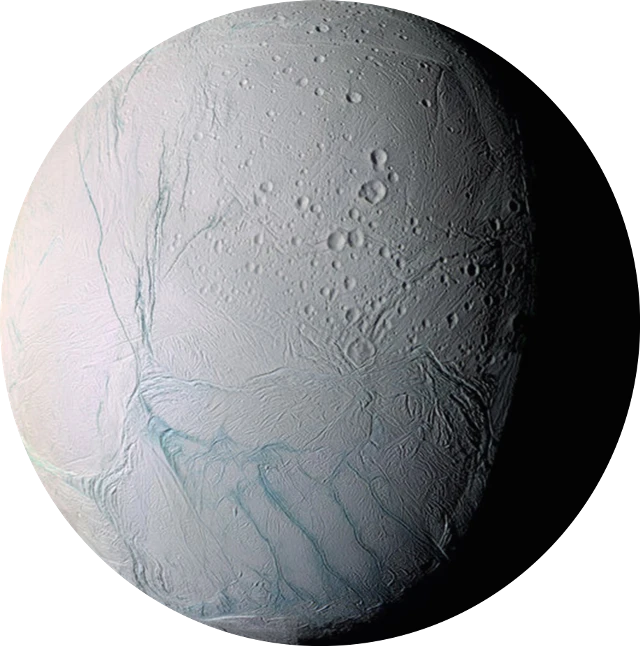
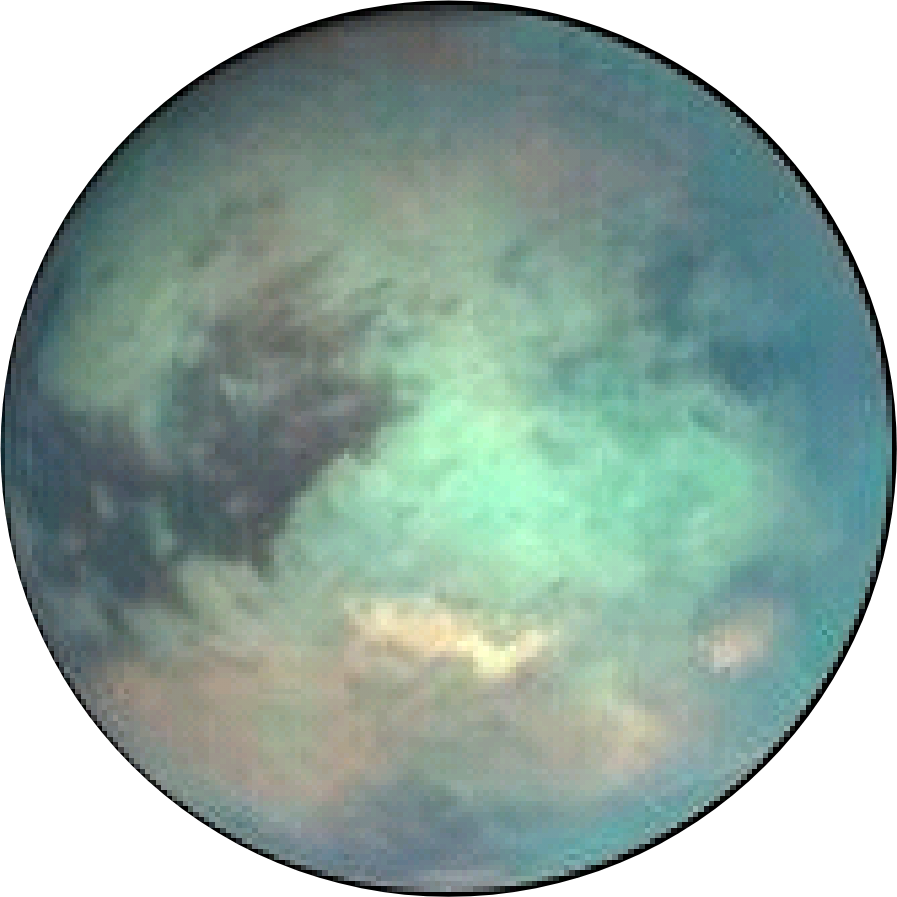
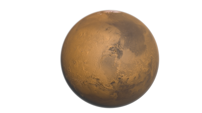
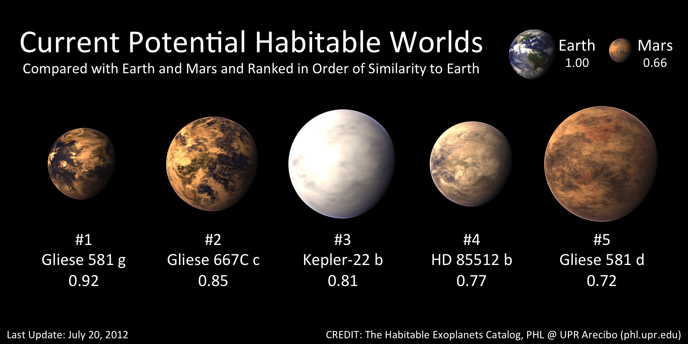
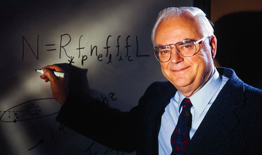
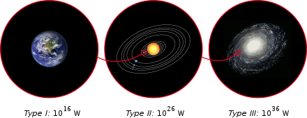

Życie pozaziemskie
↓ Paradoks Fermiego
↓ Wielki Filtr
Temat życia pozaziemskiego fascynował ludzkość od zarania dziejów, od wiekowych legend o latających obiektach, po niskiej jakości nagrania w XXI wieku.
Dzisiejszy stan rzeczy wiele się nie zmienił od tego sprzed paru tysięcy lat. Nie mamy jakichkolwiek jednoznacznych i potwierdzonych dowodów na istnienie życia poza Ziemią
Jak na dzień dzisiejszy nie odnaleziono jakichkolwiek jednoznacznych i potwierdzonych dowodów na istnienie życia poza Ziemią
Rozpoczęto natomiast rozpatrywać możliwości istnienia życia opartego nie tylko na białkach - lecz na także różnych od węgla pierwiastkach.
Hipotetycznie przecież, życie pozaziemskie nie musi mieć znanej nam z Ziemi postaci białkowej. Na tej podstawie utworzono dodatkowe definicje życia:
Definicji cybernetycznej - gdzie życie to system sprzężeń zwrotnych ujemnych podporządkowanych sprzężeniu
zwrotnemu dodatniemu. Warto dodać że definicja ta została zaproponowana przez Polaka, Bernarda Korzeniewskiego.
>> Wykład prof. Bernarda Korzeniewskiego na temat życia cybernetycznego
Definicji termodynamicznej - gdzie życie to złożona struktura dysspatywna. mająca zdolność miejscowego odwracania
entropii. Zdefiniowana jest jako samoorganuzujący się sytem nierównowagowy, którego procesami rządzi program
przechowywany w postaci symbolicznej, zdolny do reprodukcji, włącznie z programem.
Naukowcy jednak nie patrzą tylko na dalekie ciała niebieskie w poszukiwaniu oznak życia. Przypuszca się, że nawet w naszym rodzimym
Układzie Słonecznym może znajdować się życie. Do takich miejsc należą:
Mars - w głębszych skałach lub regolicie.
Europa , księżyc Jowisza - w oceanie pod skorupą satelity.
Księżyce saturna: Enceladus , w oceanie pod skorupą i Tytan, gdzie życie może istnieć na powierzchni planety, używając jednak innego rozpuszczalnika niż woda.


Górna warstwa atmosfery Wenus.

Poza układem słonecznym natomiast, ziemiopodobne planety, na których według niektórych naukowów mogłoby istnieć życie to:

Paradoks Fermiego
↑ Życie pozaziemskie
↓ Wielki Filtr
Paradoks Fermiego jest to sprzeczność pomiędzy wysokimi oszacowaniami prawdopodobieństwa istnienia pozaziemskich cywilizacji
i brakiem jakichkolwiek śladów ich istnienia.
Zarówno wiek Wszechświata, jak i liczba gwazd w nim zawartch sugerowałyby, iż życie pozaziemskie powinno być czymś powszechnym.
Pierwsze sformułowanie tego problemu w sposób prosty i klarowny przypisuje się fizykowi nobliście Enrico Fermiemu, który
w 1950 roku zadał pytanie "Gdzie oni są?". Do tej pory różne dziedziny takie jak: astronomia, biologia, ekologia, filozofia i astrobiologia
próbują odpowiedzieć na to pytanie.
Dokładna definicja paradoksu to:
Wielkość i wiek Wszechświata sugerują, że powinno istnieć wiele zaawansowanych technicznie pozaziemskich cywilizacji.
Jednak takiemu rozumowaniu przeczy brak obserwacyjnych dowodów ich istnienia.
Zatem albo początkowe założenia są nieprawidłowe i zaawansowane technicznie życie jest znacznie rzadsze niż się sądzi, albo metody obserwacji
są niekompletne i ludzkość jeszcze ich nie wykryła, albo metody są błędne i cywilizacja ludzka poszukuje niewłaściwych śladów.
Wstępne założenie paradoksu wynika ze skali rozważanych liczb:
W Drodze Mlecznej znajduje się około 400 000 000 000 gwiazd,
a w obserwowalnym Wszechświecie aż 70 000 000 000 000 000 000 000.
Nawet jeśli inteligentne życie pojawia się na znikomym procencie planet, powinno istnieć mnóstwo cywilizacji nawet
w samej Drodze Mlecznej. Wzór próbujący określić ich dokładną liczbę zaproponował dr Frank Drake w latach 60. XX wieku.
Równanie ogólne:
N = (R* × fp × n e × fl ×fi ×fc)× L,
gdzie:
N - liczba cywilizacji pozaziemskich, z którymi ludzkość może się komunikować,
R* - szybkość powstawania gwiazd w naszej Galaktyce,
fp - odsetek gwiazd, które mają planety,
n e - średnia liczba planet znajdujących się w ekosferze gwiazdy,
fl - odsetek planet w ekosferze, na której życie powstanie,
fi - odsetek planet zamieszkanych, na których życie rozwinie inteligencję,
fc - odsetek cywilizacji, które będą chciały komunikować się z ludzkością,
L - średni czas istnienia takich cywilizacji.

Doktor Frank Drake na tle swojego równania.
Na podstawie powyższego wzoru obliczono liczbę potencjalnie nadających się do życia planet, które są zamieszkane.
Wariant pesymistyczny dał liczbę 200 000 000 000 ciał zamieszkanych przez jakiekolwiek formy życia.
Obliczona część zamieszkałych przez inteligentne formy życia planet wynosi zatem: 5 000 000.
Idąc dalej oszacowano ile z tych inteligentych form życia jest w stanie przemieścić się w dowolne miejsce we Wszechświecie (zakładając że prędkość światła jest przekraczalna).
Wynosi ona: 250 000.
Daje nam to ćwierć miliona cywilizacji, które według pesymistycznych szacunków, są na tyle rozwinięte, by nas odwiedzić.
Oczywiście są to wyniki wygenerowane na podstawie abstrakcyjnych założeń i nie mają żadnego odwzorowania w rzeczywistości.
Jako, że wzór ten w żaden sposób nie przybliżył nas do poznania prawdy o życiu poza Ziemią, rozwiązać paradoks Fermiego można dwojako: empirycznie i teoretycznie.
Empiryczne rozwiązania oznacza po prostu znalezienie dowodu istnienia pozaziemskich cywilizacji na różne sposoby:
- Emisje radiowe,
- Bezpośrednie obserwacje planet,
- Pozostałości obcych,
- Wielkoskalowe konstrukcje obcyh.
Rozwiązanie empiryczne natomiast odpowiada bezpośrednio na pytanie postawione przez Fermiego:
"Gdzie oni są?"
Oni nie istnieją ..
.. i nigdy nie istnieli.
.. ponieważ sama natura niszczy złożone życie.
.. ponieważ inteligentne życie doprowadza do własnej zagłady.
Oni istnieją ..
.. ale nie chcą się z nami komunikować ..
.. ponieważ cywilizacje rozrzucone są zbyt rzadko.
.. ponieważ cywilizacje istnieją za krótko
.. ponieważ cywilizacje jeszcze nie powstały.
.. ponieważ rozprzestrzenianie się poza własny system planetarny jest zbyt kosztowne.
.. ponieważ ludzie nie szukają wystarczająco długo.
.. ponieważ Obcy nie zdążyli odpowiedzieć.
.. ponieważ ludzie nie słuchają we właściwy sposób.
.. ponieważ cywilizacje wysyłają sygnały radiowe tylko przez krótki czas.
.. ponieważ wszyscy osiągają poziom technologicznej osobliwości.
.. ponieważ stosowana przez nas technologia radiowa jest zbut prymitywna.
.. ale postanowili się nie komunikować..
.. ponieważ Ziemia została specjalnie odizolowana.
.. ponieważ są zbyt obcy.
.. ponieważ nie są zainteresowani.
.. ale pozostają dla nas niewidoczni..
.. ponieważ ukrywają swoją obecność.
.. ponieważ komunikacja jest niebezpieczna.
.. ponieważ sami ludzie ich ukrywają.
Wielki Filtr
↑ Życie pozaziemskie
↑ Paradoks Fermeigo
Wielki filtr, w kontekscie paradoksu Fermiego definiuje się jako całkowitą sumę wszystkich przeszkód, które
stoją na drodze planet bez życia, by zrodziła się na niej kosmologicznie widzialna cywilizacja.
Cywilizacje wytworzone przez inteligente życie wg. skali Kardaszowa dzieli się na trzy typy:
Typ I - cywylizacja wykorzystuje pełne zasoby energii, dostępne na jednej planecie. Potencjał takiej cywilizacji
obejmuje znaczny stopnień kontroli nad swoją planetą, wykorzystywanie reakcji termojądrowych, etc. Jest to etap, na którym się znajdujemy.
Typ II - cywilizacja wykorzystująca całą energię emitowaną przez gwiazdę centralną np. poprzez hipotetyczną Sferę Dysona.
Typ III - Cywilizacja zdolna do wykorzystania zasobów energii całej galaktyki.
Jej przykłady znaleźć można w dziełach popkultury takich jak: Star Wars, Warhammer 40k, Star Trek, etc.

Jako cywilizacja typu I przedostaliśmy się przez conajmniej 5 takich filtrów. Po pierwsze - życie wyewoluowało.
Pod względem genetycznym i biochemicznym na naszej planecie istnieje tylko jedna postać życia, co mogłoby sugerować
że to rzadki i szczęśliwy przypadek. To, że życie następnie nie wymarło z powodu wielkeigo zamarznięcia albo
wielkiego ocieplenia mogło zależeć - jak mówi David Waltham w książce Lucky Planet - od szczęśliwego przypadku posiadania
stosunkowo dużego księżyca, który stablilizował nasze obroty i łagodził nasz klimat - kolejny szczęśliwy traf.
Następnie po paru miliardach lat wyłoniły się stworzenia większe niż mikroby, a z czasem wielokomórkowe stworzenia wytwarzające
i używające tlen. Dojście do tego momentu zajęło wiele czasu, więc wiele roślin mogło zostać odfiltrowanych na tym etapie.
Ziemia miała więc złożone formy życia ponad pół miliarda lat zanim pojawiło się cokolwiek wsytarczająco inteligentnego,
by rozwinąć technikę. Przez 140 milionów lat dinozaury dominowały na ziemi, aż ich eksperyment ewolucyjny zakończył
meteoryt. Ssaki potrzebowały kolejnych 60 milionów lat, by w ogóle zacząć coś technicznego. Także wtedy
był tylko jeden gatunek - naczelny, który stał się techniczny. Nie zrobiły tego np. delfiny o równie dużych mózgach.
Jest to więc silny filtr, który udowodnił, że możliwa jest inteligencja bez jakiejkolwiek techniki.
Innymi słowy, jest bardzo prawdopodobne, że większości planet nie udało się pokonać wszystkich tych przeszkód. Na wielu mogą
kłębić się mikroby, lub moga być pełne skamielin będących śladami po nieudanej próbie pokonania filtru.